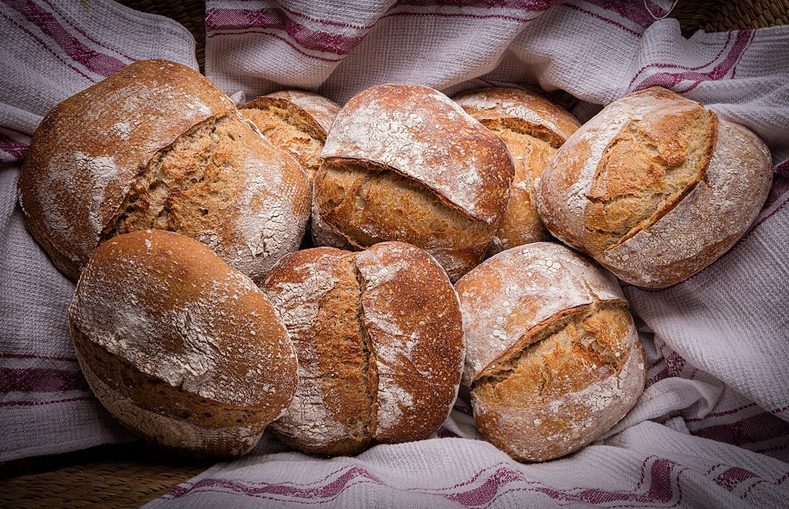

ベーカリー / 秋田県仙北市田沢湖田沢春山197
Lazuliたざわこのパン屋さん
秋田県仙北市田沢湖田沢春山197にあるベーカリー「Lazuli たざわこのパン屋さん」のご案内ページです。営業時間やメニューなど、詳しいことは準備中。まずはInstagramをのぞいてみてください。

国外のイメージ(米国)
制作側の連想
群青の石に散る、金の粒。
「Lazuli」という綴りから、制作側は宝石のラピスラズリを連想しました。深い群青色の石に、金色の小さな粒(黄鉄鉱)が散っている姿です。そこでこのサイトは、群青の地に金の粒を散らした配色で作り、パンの写真を「金の粒」に見立てて並べています。
「Lazuli」から宝石のラピスラズリを連想したのは制作側の連想で、お店の理念・由来とは無関係です。由来は分かりません。
粒を拾う(イメージ)
六つの粒。
写真は国外・撮影地不明のフリー素材のイメージです。お店のパンではありません。





ご案内
お店のこと(確認できたものだけ)
| 所在地 | 〒014-1204 秋田県仙北市田沢湖田沢春山197 |
|---|---|
| 電話 | なし |
| 営業時間 | 準備中 |
| 定休日 | 準備中 |
| ご予約 | 準備中 |
| 駐車場 | 準備中 |
| SNS | Instagram @lazuli_tazawakopan |